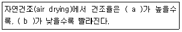
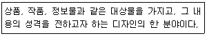

화훼장식기사 (2009-07-26 기출문제)
1과목: 화훼재료 및 형태학
1. 포도나 토마토와 같이 다즙성의 과피를 가지고 있는 열매의 형태는?
- 골돌과
- 이과
- 삭과
- 장과
(정답률: 72%)

2. 1주지가 수평선보다 훨씬 아래로 늘어지는 하수형의 소재로 적합하지 않은 것은?
- 조팝나무
- 청미래덩굴
- 무궁화
- 노박덩굴
(정답률: 알수없음)
3. 절화장식물 제작에서 채우기 꽃(filler flower)으로 가장 적합한 소재는?
- 금어초
- 장미
- 스타티스
- 서양란
(정답률: 91%)
4. 단일식물(短日植物)이 아닌 것은?
- 포인세티아
- 카네이션
- 칼랑코에
- 추국
(정답률: 알수없음)
5. 테라리움(terrarium)의 관리 방법으로 틀린 것은?
- 유리용기 내에 물방울이 맺힐 때 관수한다.
- 식물배식 직후에는 음지에서 관리한다.
- 재배온도는 20℃ 내외로 관리한다.
- 액비를 낮은 농도로 희석해서 시비한다.
(정답률: 91%)
6. 광주성에 대한 설명으로 틀린 것은?
- 질적 장일식물이란 낮의 길이가 12시간 이상일 때 개화하는 식물을 말한다.
- 질적 단일식물이란 어느 한계일장 이하에서만 개화하는 식물을 말한다.
- 양적 장일식물은 단일에서도 개화하지만 장일조건에서 개화가 촉진되는 식물을 말한다.
- 일장에 관계없이 개화하는 식물을 중성식물이라 한다.
(정답률: 30%)
7. 인경으로 번식하는 것으로만 짝지어진 것은?
- 크로커스, 다알리아, 글라디올러스
- 히아신스, 프리지아, 칼라
- 튤립, 나리, 아마릴리스
- 수선화, 구근베고니아, 글로리오사
(정답률: 62%)
8. 생육과정 중에 생장이나 절간신장이 일시적으로 정지되는 현상은?
- 로제트
- 춘화작용
- 악할
- 충전
(정답률: 85%)
9. 종자의 휴면을 연장하여 발아를 억제하는 식물 호르몬은?
- GA
- ABA
- auxin
- cytokinin
(정답률: 67%)
10. 진주암을 1400℃ 정도의 고온에서 급격히 고온처리 하여 만든 백색의 인공토양은?
- vermiculite
- perlite
- peatmoss
- osmanda
(정답률: 93%)
11. 식물의 생태학적 분류에 대한 설명으로 옳은 것은?
- 유리나라는 전형적인 대륙동안 기후형에 속한다.
- 광도의 정도에 따라 장일성 식물과 단일성 식물로 구분된다.
- 광주기에 따라 양지식물, 음지식물 등으로 구분된다.
- 식물의 수분(습도) 반응에 따라 기생식물과 공생식물로 구별된다.
(정답률: 47%)
12. 낙우송의 뿌리 중 지면위로 돌출된 부분의 명칭은?
- 기생근
- 기근
- 뿌리혹기생근
- 다육근
(정답률: 37%)
13. 일정기간의 저온을 경과해야 꽃눈이 분화되는 추식구근식물끼리 짝지어진 것은?
- 튤립, 글라디올러스
- 수선, 칸나
- 나팔나리, 구근아이리스
- 다알리아, 글로리오사
(정답률: 24%)
14. 두상화서로만 짝지어진 것은?
- 옥잠화, 맨드라미
- 거베라, 국화
- 해바라기, 수국
- 글라디올러스, 팔레높시스
(정답률: 70%)
15. 카네이션의 학명 표기법이 바르게 쓰인 것은?
- Dianthus Caryophyllus L.
- Dianthus caryophyllus L.
- dianthus caryophyllus L.
- Dianthus caryophyllus L.
(정답률: 58%)
16. 호생엽이 아닌 것은?
- 둥글레
- 드라세나
- 서양담쟁이
- 느티나무
(정답률: 67%)
17. 한 가지로부터 여러 개의 가지와 꽃을 발생시킬 목적으로 가지 끝의 생장점을 제거해 주는 것은?
- 적과
- 적화
- 적뢰
- 적심
(정답률: 79%)
18. 덩굴성 화목류로만 짝지어진 것은?
- 백량금, 남천
- 능소화, 부겐빌리아
- 죽절초, 유칼립투스
- 능수조팝나무, 마삭줄
(정답률: 82%)
19. 화훼장식 소재에 대한 설명으로 틀린 것은?
- 선형 꽃(line flower)에는 줄기를 따라 작은 꽃이 피어있는 가늘고 긴수상화서의 꽃이 많다
- 덩어리꽃(mass flower)은 둥글고 큰원추화서의 꽃이 많다.
- 숙근 안개초는 채우기 꽃(filler flower)으로 적합하다.
- 형태 꽃(form flower)은 나리와 같이 흔하지 않은 특이한 모양을 갖고 있어 디자인을 강조 해주기 때문에 디자인에 초점을 만드는데 이상적이다.
(정답률: 67%)
20. 이판화에 해당하는 것은?
- 과꽃
- 나팔꽃
- 비비추
- 무스카리
(정답률: 59%)
2과목: 화훼품질유지 및 관리론
21. 엽면시비에 대한 설명으로 틀린 것은?
- 보통 시비의 보조적인 목적으로 사용한다.
- 효과가 빨리 나타난다.
- 미량요소의 경우에는 사용하지 않는다.
- 전착제를 사용하면 흡수에 효과적이다.
(정답률: 64%)
22. 절화 수확 후 예냉처리의 목적으로 거리가 먼 것은?
- 생리대사를 억제하기 위하여
- 효소활성을 촉진시키기 위하여
- 절화의 체내 온도를 낮추기 위하여
- 생장과 발육이 진행 중이던 절화의 호흡작용을 억제하기 위하여
(정답률: 67%)
23. 화아분화를 유도하는 일장의 감응 부위는?
- 잎
- 줄기
- 뿌리
- 생장점
(정답률: 39%)
24. 개화에 관여하는 생리적 요인이 아닌 것은?
- 일장
- C/N율
- 옥신
- 화성호르몬(florigen)
(정답률: 42%)
25. 비료에 대한 설명으로 틀린 것은?
- 생육 초기부터 꽃눈이 만들어지기 전까지의 영양생장은 질소질 비료 요구도가 높다.
- 꽃이 피거나 열매가 자라는 시기는 인산질 비료 요구도가 높다.
- 추위, 더위, 병충해에 대한 저항성은 칼리 비료 요구도가 높다.
- 무늬가 있는 관엽식물은 질소 비료를 많이주면 무늬가 뚜렷해진다.
(정답률: 62%)
26. 다음 중 휴면이 없거나 매우 둔감한 꽃은?
- 상사화
- 독일은방울꽃
- 작약
- 카네이션
(정답률: 알수없음)
27. 화훼의 생리장해 발생 원인과 가장 거리가 먼 것은?
- 공해
- 기상장해
- 토양수분 부족
- 자외선 투과 필름 사용
(정답률: 84%)
28. 식물생장조절물질과 그 생리작용에 대한 설명으로 옳은 것은?
- 옥신의 이동은 기부쪽에서 선단부로이루어진다
- 지베렐린은 식물의 초장을 신장시키는 호르몬이다.
- 시토키닌은 글라디올러스 구경의 휴면을 유도한다.
- 에틸렌에 의해 나팔꽃이나 국화는 화아형성이 촉진된다.
(정답률: 알수없음)
29. 절화보존제의 구성성분 중 살균제에 해당하지않는 것은?
- Triton
- HQC(Hydroxy quinoline citrate)
- AgNO3(silver nitrate)
- TBZ(Thiobendazole)
(정답률: 47%)
30. 식물생장조절제인 IBA를 100ppm 농도의 용액으로 만들려고 한다. 1L의 용매에 넣어야 하는 IBA의 양은? (단, IBA의 비중은 1로 한다.)
- 0.01g
- 0.02g
- 0.1g
- 0.2g
(정답률: 알수없음)
31. 수분포텐셜을 나타내는 pF(potential force) 값 1에 대하여 바르게 설명한 것은?
- 물기둥의 높이가 100cm이고 압력이 0.01 기압에 해당하는 힘으로 토양입자에 흡착된 물을 의미한다.
- 물기둥의 높이가 10cm이고 압력이 0.1 기압에 해당하는 힘으로 토양입자에 흡착된 물을 의미한다.
- 물기둥의 높이가 10cm이고 압력이 0.01 기압에 해당하는 힘으로 토양입자에 흡착된 물을 의미한다.
- 물기둥의 높이가 100cm이고 압력이 1 기압에 해당하는 힘으로 토양입자에 흡착된 물을 의미한다.
(정답률: 알수없음)
32. 진딧물과 같은 매개충이나 기계적 접촉, 영양번식 등에 의해서 주로 감염이 되는 병은?
- 곰팡이병
- 세균병
- 바이러스병
- 선충병
(정답률: 80%)
33. 절화의 생리적 피해 중 재배기간 동안의 저온이 원인이 되지 않는 것은?
- 카네이션의 악할
- 장미의 블라인드
- 국화의 노심
- 국화의 관생화
(정답률: 74%)
34. 야생화 중 노루오줌은 설탕 3%, HQC 200ppm, 질산은 50ppm을 넣은 용액으로 전처리하면 꽃의 수명이 연장된다. 이 용액 1L를 만들기 위해 필요한 세가지 성분의 양으로 가장 바른 것은?
- 설탕 30g + HQC 200mg + 질산은 50mg
- 설탕 30g + HQC 20g + 질산은 50mg
- 설탕 300mg + HQC 200mg + 질산은 50g
- 설탕 300g + HQC 200g + 질산은 50g
(정답률: 알수없음)
35. 분재의 관수 시 주의해야 할 사항으로 옳은 것은?
- 낙엽성 식물은 겨울철에는 휴면 중이므로 화분에 물을 자주 주어야 한다.
- 곰솔, 해송 등의 소나무는 다른 수종보다 관수량이 많은 편이다.
- 물은 뿌려 줄 때는 노즐구멍이 작은 것을 이용하여 화분흙이 튀어나가지 않도록 한다.
- 관수는 정오에 하는 것이 가장 좋다.
(정답률: 62%)
36. 배양토의 구비조건으로 적합하지 않은 것은?
- 식물체를 지지할 수 있어야 한다.
- 배수가 잘 되어야 한다.
- 입자간 간격이 조밀하여 공극량이 적어야 한다
- 보비력이 좋아야 한다.
(정답률: 알수없음)
37. 어두운 색의 유리병이나 플라스틱병에 보관해야 광산화 침전을 방지할 수 있는 절화수명 연장제는?
- STS
- 벤잘코니움
- HQC
- Tween 20
(정답률: 57%)
38. 큰 PVC관에 튜브를 다수 연결하고 끝에 점적핀을 꽂아 화분마다 관수하는 방법은?
- 저면관수법
- 스프링클러 관수법
- Mat 관수법
- 점적관수법
(정답률: 71%)
39. 특히 봄과 여름철에 관엽식물에 자주 나타나는 해충은?
- 진딧물
- 흰가루병
- 뿌리썩음병
- 탄저병
(정답률: 71%)
40. 분화류의 선도유지를 위한 관리 방법으로 틀린것은?
- 식물의 생육에 가장 적합한 온도는 원산지의 기온 범위이므로 해당하는 원산지 완도군에 맞추어 관리한다.
- 실내에 관엽식물을 배치 할 때 광도는 500Lux 이하가 적당하며 직사광선을 피하여 배치한다.
- 관수할 때는 화분 밑으로 물이 흘러나올 정도로 충분히 주는 것이 좋다.
- 식물체에 먼지가 묻으면 광합성에 저해가 될 뿐만 아니라 오염원으로 작용하게 되므로 청결히 한다.
(정답률: 72%)
3과목: 화훼장식학
41. 신부화에 관한 설명으로 거리가 먼 것은?
- BC 400년경에 화관을 머리에 사용한 것을 신부화의 기원으로 본다.
- 서기 1500년경 벼로 만든 화환을 들고 입장하기 시작했다.
- 18세기 중엽 순결의 상징인 백색이 드레스나 웨딩 부케에 적용되기 시작하였다.
- 19세기 초기 상류사회의 영향으로 워터폴 형태의 글라멜리아가 성행하였다.
(정답률: 54%)
42. 유물에 나타난 화훼장식으로 고구려 시대의 내용이 아닌 것은?
- 쌍영총 주실 벽화에 나타난 병 꽃꽂이
- 안악 2호분 현실동벽에 그려진 꽃꽂이
- 해인사 대적광전 벽화에 나타난 연꽃
- 강서대묘 현실천정 비천상의 산화형식
(정답률: 37%)
43. 관상을 대상으로 하는 초본식물과 목본식물을 총괄하는 의미로 가장 적합한 것은?
- 화훼
- 절화
- 분식물
- 정원식물
(정답률: 75%)
44. 절화장식의 획기적인 발전과 함께 꽃꽂이 전문서적이 저술된 시기는?
- 삼국시대
- 통일신라시대
- 고려시대
- 조선시대
(정답률: 55%)
45. 테라리움과 비교할 때 디쉬가든의 특징으로 옳은 것은?
- 건조에 강한 식물을 심는다.
- 밀폐된 투명용기를 이용한다.
- 제작 후 고쳐 심기가 쉽지 않다.
- 특정장소의 제한을 받지 않는다.
(정답률: 59%)
46. 용도별 화훼장식에 관한 설명으로 옳은 것은?
- 호텔의 화훼장식의 경우 꽃은 계절보다 다소 앞서 장식하는 것이 효과적이다.
- 창가의 화훼장식의 경우 고온다습한 관엽식물이 적당하다.
- 꽃바구니는 근대 이후 종교적 목적으로 사용되었다.
- 졸업과 입학시 축하의 웨딩부케가 이용된다.
(정답률: 54%)
47. 디자인에 따라 다소 차이가 있으나 안정감이 있기 위해서는 핸드 타이드 부케(Handtied bouquet)의 묶음점 위와 아래의 길이의 비례를 얼마로 하는 것이 가장 적당한가?
- 1 : 2
- 1 : 1
- 2 : 3
- 5 : 3
(정답률: 78%)
48. 다음 ( ) 안에 들어갈 적절한 용어로 옳은 것은?

- a : 광도, b : 온도
- a : 온도, b : 습도
- a : 습도, b : 광도
- a : 온도, b : 광도
(정답률: 72%)
49. 조선시대 꽃꽂이의 특징에 대한 설명으로 옳은 것은?
- 조선시대는 불교문화의 융성으로 사원이나 궁중의식에 꽃꽂이가 성행하였다.
- 조선시대 꽃꽂이의 흔적은 주로 고분벽화에서 볼 수 있다.
- 조선시대 후기의 책거리 그림에는 꽃꽂이 그림이 많이 나타나 있다.
- 석굴암 십일면관음보살상에 나타난 삼존 구성은 대표적인 조선시대의 꽃꽂이의 흔적이라 볼 수 있다.
(정답률: 80%)
50. 코사지 중 어깨 위에서 겨드랑이를 장식하며 몸의 곡선에 맞추어 부드럽게 장식하는 것은?
- 브레스렛(bracelet)
- 에포렛(epaulet)
- 앙크렛(anklet)
- 웨스트(waist)
(정답률: 54%)
51. 콜라쥬의 역사적인 배경과 제작기법에 대한 설명으로 옳은 것은?
- 콜라쥬는 18c부터 일반적으로 사용되기 시작했으며 독특한 시각예술 형태의 하나로서 여러 가지 재료를 화면에 붙여서 구성하는 혼합재료에 의한 표현기법이다.
- 화훼장식에서의 콜라쥬는 화면에 2차원적인 회화적 요소와 3차원적인 식물재료, 그 밖의 다른 재료의 혼합구성에 의하여 새로운 시각적 언어로 표현하는 것이다.
- 콜라쥬를 만드는 기법 중에서 벽, 마루, 금속, 나무껍질과 같은 질감이 있는 물체 위에 얇은 종이를 놓고 크레용이나 분필로 골고루 문지른 후에 그 문지른 종이를 다른 질감을 가진 물체 위에 놓고 또 문질러서 복잡한 무늬를 만드는 기법을 스텐실 기법이라고 한다.
- 입체파시대의 아르누보는 화면효과를 높이고 구체감을 강조하기 위해 그림물감으로 그리는 대신에 신문, 우표, 벽지, 상표 등의 재료로 실물을 구성하는 트로타주 기법을 개발 하여 입체주의 구성을 전개시켰다.
(정답률: 65%)
52. 꽃의 건조방법으로 옳은 것은?
- 열풍 건조법 : 건조시간이 짧은 장점이 있지만 별도의 건조시설을 필요로 한다.
- 냉동 건조법 : 가장 빠른 건조방법으로 팬지, 장미, 모란 등에 사용된다.
- 글리세린 건조법 : 글리세린을 4℃정도의 물과 1:2의 비율로 혼합해서 사용하는 방법이다.
- 매몰건조법 : 가는 입자로 된 재료를 용기에 2-5cm 정도 담고 꽃을 빽빽하게 꽂아 건조 시키는 방법이다.
(정답률: 47%)
53. 성당에서 쓰이는 묵주모양의 부케(bouquet)로 장미 꽃송이를 금실로 묶어 묵주모양을 만들거나 장미의 꽃받침을 묶어서 만든 부케는?
- 머프 부케(Muffs bouquet)
- 로자리 부케(Rosary bouquet)
- 스노우 볼 부케(Snow ball bouquet)
- 프렌치 부케(French bouquet)
(정답률: 54%)
54. 화훼장식의 기능 중 치료적인 기능과 거리가 먼것은?
- 차폐효과 및 방음 효과
- 스트레스 해소와 분노감의 감퇴
- 눈의 피로 및 테크노스트레스 해소
- 식물관리로 인한 육체적 건강효과
(정답률: 86%)
55. 분식물 장식을 위한 기기의 설명으로 틀린 것은?
- 토양혼합기 - 토양재료를 비율에 맞게 넣어 혼합하는 기기
- 토양수분 감지기 - 관수시기를 쉽게 알 수있게 해주는 기기
- 조도계 - 온도조건을 찾는 기기
- 토양산도 측정기 - 산도를 측정하는 기기
(정답률: 78%)
56. 상업적인 디스플레이용 화훼장식의 설명으로 틀린 것은?
- 화훼장식 전문가로서의 아이디어를 선보이게 되므로 매우 독창적이며 예술성이 강한 디자인이 연출된다.
- 디스플레이의 주된목적은 흥미유발, 욕구자극, 고객관심, 상품구입이다.
- 단순한 공간장식보다는 상업공간의 이미지 전달과 상품 홍보를 위한 연출이 중요하다.
- 상품전시회, 무역박람회, 퍼레이드, 축제, 무대장치 등이 해당된다.
(정답률: 75%)
57. 형- 선적구성(Formal linear design)의 설명으로 틀린 것은?
- 선과 형태가 동시에 강조되어야 한다.
- 선과 형태가 두드러지게 대비되기 위해 비대칭 구성이 많다.
- 키가 크고 입구가 넓은 화기를 사용하는 것이 좋다.
- 최소한의 재료를 사용하는 것이 좋다.
(정답률: 79%)
58. 식물심기를 할 때 고려해야 할 사항이 아닌 것은?
- 실내에 심을 것인지, 실외에 심을 것인지를 고려한다.
- 용기선택은 다양하게 할 수 있으며 용기의 내구성, 배수구의 유무를 고려한다.
- 선택한 식물들의 성장속도를 고려한다.
- 조명시설과 난방시설은 고려하지 않아도 된다.
(정답률: 74%)
59. 갈란드(galand)의 사용방법으로 틀린 것은?
- 테이블의 중심에 놓여질 수 있다.
- 벽난로 위나 문 등을 장식할 수 있다.
- 숄더(shoulder)부케로 사용될 수 있다.
- 일반적으로 이젤스프레이(easel spray)에 사용된다.
(정답률: 73%)
60. 절화장식을 위한 도구 및 재료의 사용법에 대한 설명으로 틀린 것은?
- 플로랄 폼은 충분히 물을 적신 후 작업하는 것이 좋다.
- 칼을 사용할 경우는 칼끝을 자기쪽으로 향하게 하고 칼만을 움직이지 말고 팔 전체를 자기 쪽으로 끌어당기는 방법으로 사용해야 한다.
- 부케작업에서 철사를 사용할 경우는 작품이 단단해야 하므로 항상 굵은 것을 사용하는 것이 좋다.
- 라피아는 충분히 물에 적신 후 사용 하는 것이 좋다.
(정답률: 73%)
4과목: 화훼장식 디자인 및 제작론
61. 2차원적인 형상 표면의 성질이라고 볼 수 없는 것은?
- 질감(texture)
- 명암(value)
- 색상(color)
- 형태(form)
(정답률: 43%)
62. 구상적 형태 중 자연적 형태에 관한 설명으로 옳은 것은?
- 비조형적이고 사실적이며, 정적인 속성이 있다
- 딱딱하고 질서에 구속되어 있으며 직접적이다.
- 미의식을 통한 추상적 작품 창작으로 이뤄진다
- 기하학적 질서등에 영향을 받지 않은 자유로운 형태로 자연요소에 추상을 거쳐 미의식을 통한 작품 창작으로 이뤄진다.
(정답률: 39%)
63. 꽃다발에 대한 설명으로 거리가 먼 것은?
- 꽃을 가지고 다발을 만든 것으로 축하나 애도용으로 보편적으로 사용되는 화훼장식품이다.
- 줄기가 한점으로 모아지는 부분을 끈으로 묶어서 만든다.
- 꽃의 줄기를 철사로 대체하여 자유롭게 구부릴 수 있다.
- 바구니에 플로랄 폼을 고정한 뒤 꽃을 꽂아서 만든다.
(정답률: 84%)
64. 서양에서 시대별로 유행했던 웨딩부케 스타일로 틀린 것은?
- 1850 - 1890년경 : 비더마이어형
- 1890 - 1920년경 : 샤워형
- 1940 - 1950년경 : 글라멜리아
- 1960 - 1970년경 : 링형
(정답률: 65%)
65. 씨방이나 꽃받기 부분에 줄기와 직각이 되게 두개의 와이어를 +자가 되 록 찔러서 각각 두 가닥이 되도록 구부리는 철사 처리법은?
- 인서션 법 (insertion method)
- 트위스트 법(twist method)
- 크로스 법(cross method)
- 헤어핀 법(hair-pin method)
(정답률: 73%)
66. 플로랄 폼을 제자리에 고정시키거나 침봉을 고정시키는데 사용되는 점착성이 있는 방수 물질은?
- 생화용 접착제
- 접착 점토
- 꽃 테이프
- 라피아
(정답률: 73%)
67. 문(門)장식용 갈란드의 제작방법으로 옳지 않은 것은?
- 갈란드를 장식하는 장소의 모임 성격, 계절성을 고려하여 제작하며, 꽃가루가 날리지 않도록 한다.
- 플로랄 테이프의 사용 시 소재의 색상을 고려하여 반대되는 색상을 선택하여 철사 끝은 매끄럽게 감는다.
- 갈란드의 끈은 재료의 무게를 감당할 수 있는 것으로 선택하고, 길이 역시 재료의 무게를 고려하여 정해야 한다.
- 완성된 갈란드의 형태는 가운데가 늘어지는 형태로 하며, 묶거나 꽂은 재료들이 빠지거나 떨어지지 않도록 제작되어야 한다.
(정답률: 84%)
68. 버드나무와 개나리의 나뭇가지나 튤립과 칼라 등의 줄기를 곡선으로 만들 때 소재를 유연하게 만드는 기법으로 자주 사용하는 것은?
- 마사징(massaging)
- 필로잉(pillowing)
- 클러스터링(clustering)
- 쉐도잉(shadowing)
(정답률: 75%)
69. 비슷한 소재를 계단처럼 층층이 쌓거나 수평형으로 제작하는 기법은?
- 레이어링(layering)
- 스테킹(stacking)
- 그루핑(grouping)
- 테라싱(terracing)
(정답률: 알수없음)
70. 먼셀 색체계에 대한 설명으로 틀린 것은?
- HV/C 가 표기법으로 사용된다.
- 채도의 한도는 색상에 따라 다르다.
- 미국의 먼셀이 19⑤년에 창안한 것이다.
- 명도는 가장 이상적인 검정을 10, 이상적인 흰색은 0이라 한다.
(정답률: 55%)
71. 그 자체로는 차거나 따뜻한 느낌의 온도감이 잘 느껴지지 않으나 함께 배색하는 색상에 따라 온도감에 변화를 보이는 색은?
- 보라색
- 노란색
- 빨간색
- 파란색
(정답률: 50%)
72. 시간적으로 근접하여 연속적으로 제시될 때의 차이에 의해 느껴지는 대비현상은?
- 면적대비(面積對比)
- 동시대비(同時對比)
- 계시대비(繼時對比)
- 명도대비(明度對比)
(정답률: 67%)
73. 한국의 전통색인 오정색(五正色)과 방위에 관하여 틀린 것은?
- 황색 - 중앙
- 청색 - 남쪽
- 흑색 - 북쪽
- 백색 - 서쪽
(정답률: 65%)
74. 균형(balance)에 관한 설명으로 틀린 것은?
- 둘 이상의 힘이 서로 평균이 되는 것이다.
- 시각적 균형은 대칭 균형과 비대칭 균형으로 나눈다.
- 균형의 표현은 안정의 개념으로 설명되는 디자인 원리이다.
- 같은 요소들에 의한 시각적 움직임이 연속적으로 되풀이 되는 것이다.
(정답률: 67%)
75. 절화나 분식물을 이용하여 여러 가지 동물의 형상이나 구형으로 다듬어 제 작하는 화훼장식물은?
- topiary
- arch
- collage
- pressed flower
(정답률: 73%)
76. 화훼장식의 배색에 대한 설명으로 옳은 것은?
- 채도가 낮은 색보다 고채도의 색이, 난색보다 시원한 한색이 주위를 끈다.
- 근접 색과의 배색은 강한 변화가 있는 자극적인 조화를 이룬다.
- 유사색상의 배색은 통일감은 있지만 변화 효과가 떨어진다.
- 동일 톤의 배식이라 함은 색상은 같으나 채도와 명도의 차가 다른 배색을 말한다.
(정답률: 55%)
77. 가법혼합에 대한 설명으로 틀린 것은?
- 색광혼합이라고 한다.
- 색료혼합이라고 한다.
- 혼합하면 할수록 명도가 높아진다.
- 빨강(R), 초록(G), 파랑(B)의 3원색이다.
(정답률: 28%)
78. “디자인(design)한다”의 근본적인 뜻으로 가장 바른 것은?
- 계획하고 구성하는 것이다.
- 주제를 파악하는 것이다.
- 우연에 의한 행위 결과이다.
- 시각적 전달을 위한 수단이 전부이다.
(정답률: 70%)
79. 다음은 무엇에 대한 설명인가?

- 포트폴리오
- 디스플레이
- 캐스킷 커버
- 프레젠테이션
(정답률: 59%)
80. 화훼장식에 있어서 대칭균형에 대한 설명으로 틀린 것은?
- 중심축을 기준으로 양쪽에 같은 요소를 동일하게 배열 한다.
- 질서가 있어 안정된 느낌이다.
- 공식적이고 위엄이 있어 보인다.
- 자연스럽고 비정형적이며 생동감이 있다.
(정답률: 85%)
5과목: 화훼유통 및 경영론
81. 화훼도매시장의 경매운영절차로 옳은 것은?
- 반입관리 → 경매 → 반출 → 물량유치
- 반입관리 → 물량유치 → 경매 → 반출
- 물량유치 → 경매 → 반입관리 → 반출
- 물량유치 → 반입관리 → 경매 → 반출
(정답률: 55%)
82. 절화의 출하시 규격화가 되면 화훼유통 측면에서의 장점은?
- 포장내 내용물의 보호로 노화를 증가시킴
- 하역작업의 능률화가 곤란하여 경비가 증가됨
- 생산농가의 소득증대를 기여할 수 없음
- 거래단위가 통일되어 유통능률 향상 및 고정된 거래가 가능함
(정답률: 80%)
83. 화훼의 상품적 특성이 아닌 것은?
- 감모율이 낮다.
- 수송비가 많이 든다.
- 선도와 외형이 상품가치를 결정한다.
- 소매점에서 가공률이 높은 상품이다.
(정답률: 60%)
84. 화훼류의 생산 3요소에 해당하는 것으로 보기 어려운 것은?
- 유통 경로는 가급적 길어야 한다.
- 운송의 효율성이 고려되어야 한다.
- 지속적으로 양질의 종자가 개발되어야 한다.
- 빛, 온도 등 환경적 요소가 골고루 충족되어야 한다.
(정답률: 92%)
85. 화훼산업의 특징으로 틀린 것은?
- 국제성이 높지 않다.
- 환경 미화재료를 생산한다.
- 생산기술의 전문화를 필요로 한다.
- 시설을 이용하여 연중 집약재배 할 수 있다.
(정답률: 82%)
86. 최근 절화류가 가장 많이 소비되는 형태는?
- 행사용 화환
- 선물용
- 일상생활 감상용
- 식용(食用)
(정답률: 54%)
87. 매장 안의 화훼상품을 진열하는 요령에 관한설명으로 틀린 것은?
- 상품에 가격을 표시한다.
- 시선이 많이 닿는 곳에 특매품을 진열한다.
- 키가 큰 상품은 벽쪽보다 중앙에 배치한다.
- 관계있는 상품끼리 모아 고객의 눈길을 끌도록 한다.
(정답률: 알수없음)
88. 상품 배달 시 주의해야 할 사항으로 가장 거리가 먼 것은?
- 상품이 상하지 않도록 주의해서 배달한다.
- 카드나 메시지 포함 여부 및 실명 확인을 실시한다.
- 배달 전 주문받은 상품이 맞는지 한 번 더 확인한다.
- 배달 약속시간에서 30분 이내에서 늦는 것은 무방하다.
(정답률: 92%)
89. 절화의 저온수송 효과와 거리가 먼 것은?
- 호흡촉진
- 꽃의 개화지연
- 절화수명연장
- 급속한 수분손실 방지
(정답률: 92%)
90. 소매업이 하고 있는 역할과 가장 거리가 먼 것은?
- 구매장소를 제공한다.
- 소비자가 원하는 상품을 제공한다.
- 상품의 수요와 공급의 원활을 기대한다.
- 상품정보, 유행정보, 생활정보를 제공한다.
(정답률: 65%)
91. 절화의 수송이나 저장 전에 주요 성분이 당(糖)인 용액을 단시간 처리해 주는 방법은?
- 펄싱(pulsing)
- 재수화
- 봉오리 열림제 처리
- 염색 처리
(정답률: 82%)
92. 국내에서 생산되는 화훼의 수출이 가장 많이 이루어지고 있는 나라는?
- 중국
- 네덜란드
- 미국
- 일본
(정답률: 82%)
93. 가정 장식용 꽃 수요가 확대됨으로 나타나는 현상은?
- 꽃 소비의 안정화에 기여한다.
- 꽃 소비 품목이 단순화 된다.
- 꽃 포장이 많아져 가격이 상승한다.
- 기술교육 및 관련자재에 대한 수요가 감소한다.
(정답률: 73%)
94. 우리나라 화훼 유통구조의 특징이 아닌 것은?
- 유통시설 미비
- 저온시설 부족
- 공동출하 체제의 발달
- 유사도매시장의 거래 주도
(정답률: 54%)
95. 화훼상품의 전자 상거래의 장점이 될 수 있는 것은?
- 반품이나 환불이 언제든지 가능하다.
- 세계시장을 상대로 영업이 불가능하다.
- 생산자와 소비자 간의 직거래가 어렵다.
- 특별한 판매장소가 없이도 창업이 가능하다.
(정답률: 50%)
96. 전자 상거래의 활성화를 위한 수단과 거리가 먼것은?
- 다양한 충동구매 요인 제공
- 규격화에 따른 품질 기준 확립
- 소비자에 대한 신용도 향상
- 전자화폐 결제 방식 도입
(정답률: 67%)
97. 공간을 장식할 때 유의해야 할 사항이 아닌 것은?
- 장소의 성격을 고려한다.
- 장식공간의 기능을 고려한다.
- 장식원예 보조 용구를 활용한다.
- 식물이 오래가도록 분위에 거름을 충분히 준다
(정답률: 알수없음)
98. 절화의 외적 품질 기준이 아닌 것은?
- 줄기의 굵기
- 잎의 상태
- 전체 밸런스
- 관상 가능 시간
(정답률: 82%)
99. 고품질 절화의 조건이 아닌 것은?
- 줄기가 견고하다.
- 꽃의 색이 선명하다.
- 꽃잎이나 잎이 비교적 얇다.
- 스프레이형의 절화는 착화수가 많아야 한다.
(정답률: 70%)
100. 절화의 품질평가를 위한 코노바(Conover)의 점수평가제에서 가장 배점이 높은 항목은?
- 형태
- 상태
- 색
- 줄기와 잎
(정답률: 54%)